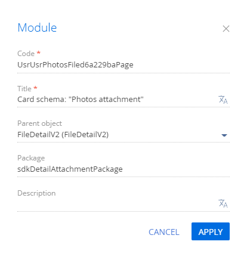
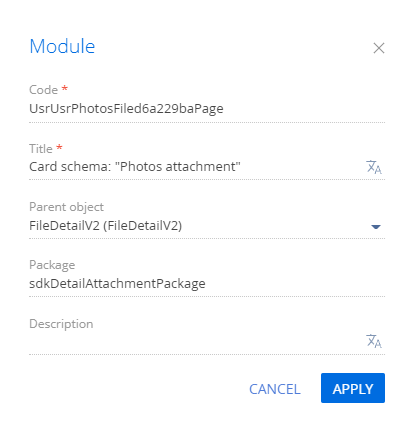

1. Создать пользовательский раздел
- Создайте пользовательский пакет и установите его в качестве текущего. Подробнее читайте в статье Общие принципы работы с пакетами.
- Перейдите в дизайнер системы по кнопке
 .
. - В блоке Настройка системы (System setup) перейдите по ссылке Мастер разделов (Section wizard).
-
Заполните настройки раздела:
- Заголовок (Title) — "Фотографии" ("Photos").
- Код (на английском) (Code) — "UsrPhotos".
- Рабочее место (Workplace) — выберите "Продажи" ("Sales").
- На панели инструментов мастера разделов нажмите Сохранить (Save).
В результате:
-
Пользовательский раздел Фотографии (Photos) отображается в рабочем месте Продажи (Sales).
-
В конфигурации созданы схемы раздела Фотографии (Photos).
2. Создать пользовательскую деталь
- Перейдите в дизайнер системы по кнопке .
- В блоке Настройка системы (System setup) перейдите по ссылке Мастер деталей (Detail wizard).
-
Заполните свойства детали:
- Заголовок (Title) — "Прикрепленные фотографии" ("Photos attachment").
- По какому объекту создать деталь? (How to create detail?) — выберите "Существующему объекту" ("Based on existing object").
- Объект (Object) — выберите "Файл и ссылка объекта Фотографии" ("Photos attachment").
- На панели инструментов мастера деталей нажмите Сохранить (Save).
После сохранения в конфигурации созданы:
- Схема UsrSchemae9733d1bDetail модели представления детали Прикрепленные фотографии (Photos attachment).
- Схема UsrUsrPhotosFiled6a229baPage страницы записи детали Прикрепленные фотографии (Photos attachment).
3. Настроить пользовательскую деталь
- Перейдите в раздел Конфигурация (Configuration) и выберите пользовательский пакет, который был установлен в качестве текущего.
- Откройте схему UsrUsrPhotosFiled6a229baPage страницы записи детали Прикрепленные фотографии (Photos attachment).
-
На панели свойств нажмите кнопку
/scr_edit_button.png) и измените значение поля Родительский объект (Parent object) на FileDetailV2. Схема FileDetailV2 пакета UIv2 реализует деталь Файлы и ссылки (Attachments). По умолчанию в мастере деталей в качестве родительского объекта устанавливается базовая схема детали с реестром.
и измените значение поля Родительский объект (Parent object) на FileDetailV2. Схема FileDetailV2 пакета UIv2 реализует деталь Файлы и ссылки (Attachments). По умолчанию в мастере деталей в качестве родительского объекта устанавливается базовая схема детали с реестром. - Для применения заданных свойств нажмите Применить (Apply).
- На панели инструментов дизайнера нажмите Сохранить (Save).
4. Добавить деталь в раздел
- Перейдите в раздел Фотографии (Photos).
- На панели инструментов кликните Вид —> Открыть мастер раздела (View —> Open section wizard).
- В блоке Страницы раздела (Section pages) нажмите кнопку Редактировать страницу (Edit page).
- В рабочей области мастера разделов нажмите кнопку Добавить деталь (New detail).
-
Заполните настройки детали.
- Деталь (Detail) — выберите "Прикрепленные фотографии" ("Photos attachment"). Поля Заголовок (Title) и Код (на английском) (Code) заполнятся автоматически.
- Заголовок (Title) — измените на "Прикрепленные фотографии" ("Photos attachment").
- Нажмите Сохранить —> Мастер раздела —> Сохранить (Save —> Section wizard —> Save).
В результате деталь Прикрепленные фотографии (Photos attachment) будет добавлена на страницу записи раздела Фотографии (Photos).

5. Добавить пользовательские стили детали
Поскольку в схеме модели представления страницы детали невозможно задать стили для отображения, необходимо:
- Создать схему модуля, в которой определить стили.
- Добавить модуль со стилями в зависимости модуля детали.
1. Создать схему модуля
- Перейдите в раздел Конфигурация (Configuration) и выберите пользовательский пакет, который был установлен в качестве текущего.
-
На панели инструментов реестра раздела нажмите Добавить —> Модуль (Add —> Module).
-
Заполните свойства схемы:
- Код (Code) — "UsrSchemaDetailCSS".
- Заголовок (Title) — "SchemaDetailCSS".
Для применения заданных свойств нажмите Применить (Apply).
-
Перейдите в узел LESS структуры объекта и задайте необходимые стили отображения детали.
- На панели инструментов дизайнера нажмите Сохранить (Save).
2. Модифицировать схему модели представления детали
Чтобы использовать созданный модуль и его стили в схеме детали:
- Откройте схему UsrSchemae9733d1bDetail модели представления детали Прикрепленные фотографии (Photos attachment).
-
В зависимости схемы UsrSchemae9733d1bDetail добавьте модуль UsrSchemaDetailCSS.
Исходный код модифицированной схемы представлен ниже.
- На панели инструментов дизайнера нажмите Сохранить (Save).
Результат выполнения примера
В результате на страницу записи пользовательского раздела Фотографии (Photos) добавлена деталь Прикрепленные фотографии (Photos attachment).